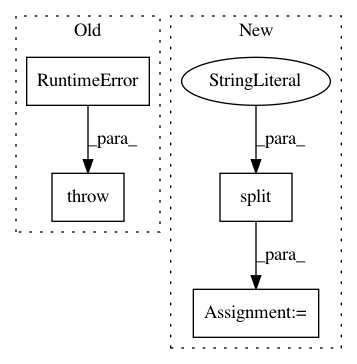

01287d53f5b22f7da20a7b08a836d3a7f6c7af9f,torch_geometric/datasets/s3dis.py,S3DIS,download,#S3DIS#,49
Before Change
return "data.pt"
def download(self):
raise RuntimeError(
"Dataset not found. Please download {} from {} and move it to {}".
format(self.raw_file_names, self.url, self.raw_dir))
def process(self):
scipy.io.loadmat(self.raw_paths[0])
raise NotImplementedError
After Change
extract_zip(path, self.root)
os.unlink(path)
shutil.rmtree(self.raw_dir)
name = self.url.split(os.sep)[-1].split(".")[0]
os.rename(osp.join(self.root, name), self.raw_dir)
def process(self):
with open(self.raw_paths[0], "r") as f:
In pattern: SUPERPATTERN
Frequency: 3
Non-data size: 4
Instances
Project Name: rusty1s/pytorch_geometric
Commit Name: 01287d53f5b22f7da20a7b08a836d3a7f6c7af9f
Time: 2019-06-17
Author: matthias.fey@tu-dortmund.de
File Name: torch_geometric/datasets/s3dis.py
Class Name: S3DIS
Method Name: download
Project Name: markovmodel/PyEMMA
Commit Name: f51387e15daaeb04ae4438bfd88446534ce663ae
Time: 2017-09-15
Author: clonker@gmail.com
File Name: pyemma/_base/serialization/jsonpickler_handlers.py
Class Name: NumpyExtractedDtypeHandler
Method Name: restore
Project Name: tensorflow/transform
Commit Name: 6c83b47904619bcd2bbb0be73bd76e11598a755a
Time: 2017-11-30
Author: tf-transform-dev@google.com
File Name: tensorflow_transform/beam/impl.py
Class Name:
Method Name: _assert_tensorflow_version